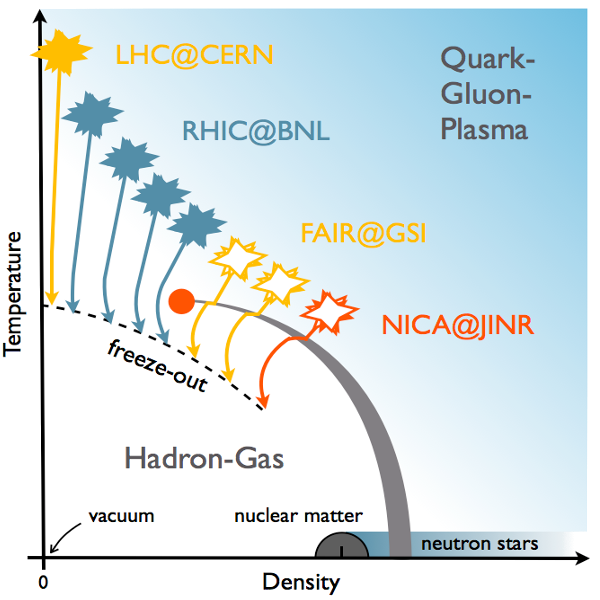

O QGP no Universo
Como vimos, o Plasma de quarks e Glúons pode ser criado no labratório, mas há outros lugares onde ele pode existir ou ter existido.
O Universo Primordial
Crédito: Partice Data Group
A figura acima resume a história do nosso universo tal como ela é reconstruída por físicos e cosmologistas a partir de dados observacionais (e extrapolações). Da esquerda para a direita, o universo envelhece, se expande e esfria. Observe que por um período o universo era preenchido por um Plasma de Quarks e Glúons junto com outras partículas. Aproximadamente a [dez a menos 6s] este plasma esfriou o suficiente para que quarks e glúons se combinassem em hádrons.
Esta transição é muito similar em termos de temperatura (alta) e densidade bariônica (quase nula) àquela presente nos experimentos do RHIC e do LHC. Isto é mostrado no eixo vertical da figura abixo. Os físicos estão agora tentando produzir Plasma de Quarks e Glúons em outras condições de temperatura e densidade, como mostrado pelos símbolos de mini-explosões da figura, usando vários aceleradores (RHIC, FAIR, NICA).
Crédito: Universidade de Bielefeld
Estrelas de Nêutrons e Estrelas de Quarks
Na figura anterior, observa-se que a banda azul horizontal ocupada pelas estrelas de nêutrons penetra na região do Plasma de Quarks e Glúons. O que significa isso?
Estrelas de nêutrons são um dos tipos remanescentes de estrela que são resultado de estrelas de grande massa que explodiram no fim de suas vidas num fenômeno chamado de supernova. São objetos tão densos que todos os prótons e elétrons de seus átomos se combinam para formar nêutrons, daí o seu nome. Pode-se ter uma idéia de sua densidade dividindo sua massa, da ordem de 1,5 massa solar por seu volume [4 pi R ao cubo], onde R é o seu raio (da ordem de 15km). Daí, obtem-se uma densidade de [], isto é, [] a densidade da matéria nuclear usual. Isto significa que nos seus centros pode haver Plasma de Quarks e Glúons. Astrofísicos especulam que podem existir também estrelas de quarks, mas estas ainda não foram observadas com certeza.
A nebulosa do caranguejo é a sobra de uma supernova observada na terra em 1054 d.C. Ela abriga uma estrela de nêutrons descoberta em 1968.
Foto feita com o telescópio Hubble, mostrando a nebulosa do caranguejo e sua estrela de nêutrons (o ponto mais a direita dos dois pontos brilhantes no centro da imagem). Disponível em hubblesite.org/newscenter/archive/releases/2016/26
Raios Cósmicos
Raios cósmicos são partículas de alta energia que chegam na terra vindo do espaço. Eles são bastante misteriosos: nem sempre se sabe que tipo de partículas os constituem, de onde elas vem ou como são aceleradas. Estes raios cósmicos podem vir com energia muito maior do que as atingidas em aceleradores. Desta forma, quando raios cósmicos de alta energia chegam à terra e colidem com núcleos da atmosfera, Plasma de Quarks e Glúons deve ser criado. Contudo, atualmente sabemos muito pouco sobre essa possibilidade.
A terra está sendo contínuamente bombardeada por raios cósmicos. Quando penetram na atmosfera, colidem, criando partículas de energia menor que colidem criando partículas com energia ainda menor e assim por diante. A cascata de partículas resultante é chamada de chuveiro de partículas.
Como se vê, o Plasma de Quarks e Glúons foi descoberto no laboratório, mas pode ter existido no universo primordial, assim como ter existido no interior (ou no corpo inteiro) de estrelas muito densas. Ainda temos muito o que aprender sobre essa fase da matéria.